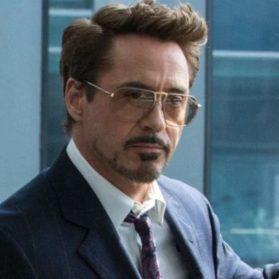

Tony Stark teve uma relação difícil com seu pai, sendo enviado para um internato aos seis anos de idade, onde ele iria em breve começar a experimentar a convivência com mais pessoas. Mesmo sendo uma criança no Ensino médio, ele era o melhor aluno e considerado prodígio e gênio para muitos. Mais tarde é revelado que ard mesmo sendo uma boa pessoa, quando é vítima da fraqueza dos Starks (Álcool), se tornava um alcoólatra desprezível tanto verbalmente quanto abusivo, com sua esposa e filho. Foi Howard que forçou Tony a beber sua primeira bebida alcoólica. Howard tentou ensinar à Tony muitas lições, tais como os custos de fazer a guerra e que ele deve sempre limpar suas próprias mãos.

Na versão original, durante a guerra do Vietnã, o inventor e empresário Tony Stark foi vítima de uma explosão de granada.
Stark sobreviveu à explosão mas estilhaços do explosivo se alojaram próximo ao seu coração, ameaçando sua vida. Ele foi capturado e levado até o líder Wong Chu.
Restavam apenas alguns dias de vida para o americano, e Wong Chu o forçou a criar uma poderosa arma.Tony não criou uma arma e sim algo que o mantivesse vivo e permitisse derrotar os captores.
Preso com ele estava outro gênio, o professor Ho Yinsen. Stark revelou seu plano ao professor e Yinsen o ajudou.
Quando os homens de Wong Chu se aproximaram, o velho professor pegou uma metralhadora, mas acabou sendo fuzilado, mas garantiu tempo suficiente para que Stark se recuperasse e se acostumasse a usar a armadura criada.
O Homem de Ferro enfrentou os soldados e os derrotou. Sua armadura resistia aos disparos contra ele. Wong Chu tentou fugir e o Homem de Ferro incendiou o galpão de munições fazendo com que a explosão o matasse.
Os prisioneiros foram libertados. Desde então Stark desenvolveu novas versões de sua armadura e adotou as cores vermelho e dourado como as padrões da armadura, com algumas pequenas alterações esporádicas como preto, prateado e, mais recentemente, branco.
No começo de suas atuações, e para que ninguém desconfiasse, Stark espalhou o boato de que o Homem de Ferro era seu guarda-costas. Nas aventuras dos anos 70 e 80, era comum heróis, vilões e coadjuvantes do Universo Marvel se referirem ao Homem de Ferro como
"o lacaio de armadura". Apenas seu motorista, Harold "Happy" Hogan, e sua secretária, Virginia "Pepper" Potts, sabiam da identidade secreta de Stark.
Eu sou o Homem de Ferro..